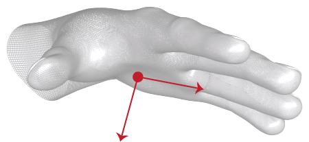

Methods:
The LeapHand class reports the physical characteristics of a detected hand.
Hand tracking data includes a palm position and velocity; vectors for the palm normal and direction to the fingers; properties of a sphere fit to the hand; and lists of the attached fingers and tools.
Note that LeapHand objects can be invalid, which means that they do not contain valid tracking data and do not correspond to a physical entity. Invalid LeapHand objects can be the result of asking for a Hand object using an ID from an earlier frame when no hand objects with that ID exist in the current frame. A hand object created from the LeapHand constructor is also invalid. Test for validity with the LeapHand isValid function.
Public Functions
- Since 1.0
Public Static Functions- (LeapVector *) directionThe direction from the palm position toward the fingers.
The direction is expressed as a unit vector pointing in the same direction as the directed line from the palm position to the fingers.
- Return
- The LeapVector pointing from the palm position toward the fingers.
- Since 1.0
- (LeapFinger *) finger:(int32_t) fingerIdThe LeapFinger object with the specified ID attached to this hand.
Use this [LeapHand finger:] function to retrieve a LeapFinger object attached to this hand using an ID value obtained from a previous frame. This function always returns a LeapFinger object, but if no finger with the specified ID is present, an invalid LeapFinger object is returned.
Note that ID values persist across frames, but only until tracking of a particular object is lost. If tracking of a finger is lost and subsequently regained, the new LeapFinger object representing that finger may have a different ID than that representing the finger in an earlier frame.
- Return
- The LeapFinger object with the matching ID if one exists for this hand in this frame; otherwise, an invalid LeapFinger object is returned.
- Since 1.0
- Parameters
- fingerId -
The ID value of a LeapFinger object from a previous frame.
- (NSArray *) fingersThe list of LeapFinger objects detected in this frame that are attached to this hand, given in arbitrary order.
The list can be empty if no fingers attached to this hand are detected.
- Return
- An NSArray containing all LeapFinger objects attached to this hand.
- Since 1.0
- (LeapFrame *) frame- (int32_t) idA unique ID assigned to this LeapHand object, whose value remains the same across consecutive frames while the tracked hand remains visible.
If tracking is lost (for example, when a hand is occluded by another hand or when it is withdrawn from or reaches the edge of the Leap field of view), the Leap may assign a new ID when it detects the hand in a future frame.
Use the ID value with the [LeapFrame hand:] function to find this LeapHand object in future frames.
- Return
- The ID of this hand.
- Since 1.0
- (BOOL) isValid- (LeapVector *) palmNormalThe normal vector to the palm.
If your hand is flat, this vector will point downward, or “out” of the front surface of your palm.

The direction is expressed as a unit vector pointing in the same direction as the palm normal (that is, a vector orthogonal to the palm).
- Return
- The LeapVector normal to the plane formed by the palm.
- Since 1.0
- (LeapVector *) palmPositionThe center position of the palm in millimeters from the Leap origin.
- Return
- The LeapVector representing the coordinates of the palm position.
- Since 1.0
- (LeapVector *) palmVelocityThe rate of change of the palm position in millimeters/second.
- Return
- The LeapVector representing the coordinates of the palm velocity.
- Since 1.0
- (LeapPointable *) pointable:(int32_t) pointableIdThe LeapPointable object with the specified ID associated with this hand.
Use this [LeapHand pointable:] function to retrieve a LeapPointable object associated with this hand using an ID value obtained from a previous frame. This function always returns a LeapPointable object, but if no finger or tool with the specified ID is present, an invalid LeapPointable object is returned.
Note that ID values persist across frames, but only until tracking of a particular object is lost. If tracking of a finger or tool is lost and subsequently regained, the new LeapPointable object representing that finger or tool may have a different ID than that representing the finger or tool in an earlier frame.
- Return
- The LeapPointable object with the matching ID if one exists for this hand in this frame; otherwise, an invalid LeapPointable object is returned.
- Since 1.0
- Parameters
- pointableId -
The ID value of a LeapPointable object from a previous frame.
- (NSArray *) pointablesThe list of LeapPointable objects (fingers and tools) detected in this frame that are associated with this hand, given in arbitrary order.
The list can be empty if no fingers or tools associated with this hand are detected.
Use the [LeapPointable isFinger] function to determine whether or not an item in the list represents a finger. Use the [LeapPointable isTool] function to determine whether or not an item in the list represents a tool. You can also get only fingers using the [LeapHand fingers] function or only tools using the [LeapHand tools] function.
- Return
- An NSArray containing all LeapPointable objects associated with this hand.
- Since 1.0
- (float) rotationAngle:(const LeapFrame *) sinceFrameThe angle of rotation around the rotation axis derived from the change in orientation of this hand, and any associated fingers and tools, between the current LeapFrame and the specified LeapFrame.
The returned angle is expressed in radians measured clockwise around the rotation axis (using the right-hand rule) between the start and end frames. The value is always between 0 and pi radians (0 and 180 degrees).
If a corresponding LeapHand object is not found in sinceFrame, or if either this frame or sinceFrame are invalid LeapFrame objects, then the angle of rotation is zero.
- Return
- A positive value representing the heuristically determined rotational change of the hand between the current frame and that specified in the sinceFrame parameter.
- Since 1.0
- Parameters
- sinceFrame -
The starting LeapFrame for computing the relative rotation.
The angle of rotation around the specified axis derived from the change in orientation of this hand, and any associated fingers and tools, between the current LeapFrame and the specified LeapFrame.
The returned angle is expressed in radians measured clockwise around the rotation axis (using the right-hand rule) between the start and end frames. The value is always between -pi and pi radians (-180 and 180 degrees).
If a corresponding LeapHand object is not found in sinceFrame, or if either this frame or sinceFrame are invalid LeapFrame objects, then the angle of rotation is zero.
- Return
- A value representing the heuristically determined rotational change of the hand between the current frame and that specified in the sinceFrame parameter around the specified axis.
- Since 1.0
- Parameters
- sinceFrame -
The starting LeapFrame for computing the relative rotation.
- axis -
A LeapVector representing the axis to measure rotation around.
The axis of rotation derived from the change in orientation of this hand, and any associated fingers and tools, between the current LeapFrame and the specified LeapFrame.
The returned direction vector is normalized.
If a corresponding LeapHand object is not found in sinceFrame, or if either this frame or sinceFrame are invalid LeapFrame objects, then this method returns a zero vector.
- Return
- A LeapVector containing the normalized direction vector representing the heuristically determined axis of rotational change of the hand between the current frame and that specified in the sinceFrame parameter.
- Since 1.0
- Parameters
- sinceFrame -
The starting LeapFrame for computing the relative rotation.
The transform matrix expressing the rotation derived from the change in orientation of this hand, and any associated fingers and tools, between the current LeapFrame and the specified LeapFrame.
If a corresponding LeapHand object is not found in sinceFrame, or if either this frame or sinceFrame are invalid LeapFrame objects, then this method returns an identity matrix.
- Return
- A transformation LeapMatrix representing the heuristically determined rotational change of the hand between the current frame and that specified in the sinceFrame parameter.
- Since 1.0
- Parameters
- sinceFrame -
The starting LeapFrame for computing the relative rotation.
- (float) rotationProbability:(const LeapFrame *) sinceFrameThe estimated probability that the hand motion between the current LeapFrame and the specified LeapFrame is intended to be a rotating motion.
If a corresponding LeapHand object is not found in sinceFrame, or if either this frame or sinceFrame are invalid LeapFrame objects, then this method returns zero.
- Return
- A value between 0 and 1 representing the estimated probability that the hand motion between the current frame and the specified frame is intended to be a rotating motion.
- Since 1.0
- Parameters
- sinceFrame -
The starting LeapFrame for computing the relative rotation.
- (float) scaleFactor:(const LeapFrame *) sinceFrameThe scale factor derived from this hand’s motion between the current LeapFrame and the specified LeapFrame.
The scale factor is always positive. A value of 1.0 indicates no scaling took place. Values between 0.0 and 1.0 indicate contraction and values greater than 1.0 indicate expansion.
The Leap derives scaling from the relative inward or outward motion of a hand and its associated fingers and tools (independent of translation and rotation).
If a corresponding LeapHand object is not found in sinceFrame, or if either this frame or sinceFrame are invalid LeapFrame objects, then this method returns 1.0.
- Return
- A positive value representing the heuristically determined scaling change ratio of the hand between the current frame and that specified in the sinceFrame parameter.
- Since 1.0
- Parameters
- sinceFrame -
The starting LeapFrame for computing the relative scaling.
- (float) scaleProbability:(const LeapFrame *) sinceFrameThe estimated probability that the hand motion between the current LeapFrame and the specified LeapFrame is intended to be a scaling motion.
If a corresponding LeapHand object is not found in sinceFrame, or if either this frame or sinceFrame are invalid LeapFrame objects, then this method returns zero.
- Return
- A value between 0 and 1 representing the estimated probability that the hand motion between the current frame and the specified frame is intended to be a scaling motion.
- Since 1.0
- Parameters
- sinceFrame -
The starting LeapFrame for computing the relative scaling.
- (LeapVector *) sphereCenterThe center of a sphere fit to the curvature of this hand.
This sphere is placed roughly as if the hand were holding a ball.
- Return
- The LeapVector representing the center position of the sphere.
- Since 1.0
- (float) sphereRadiusThe radius of a sphere fit to the curvature of this hand.
This sphere is placed roughly as if the hand were holding a ball. Thus the size of the sphere decreases as the fingers are curled into a fist.
- Return
- The radius of the sphere in millimeters.
- Since 1.0
- (LeapVector *) stabilizedPalmPositionThe stabilized tip position of this Pointable.
Smoothing and stabilization is performed in order to make this value more suitable for interaction with 2D content.
- Return
- A modified tip position of this Pointable object with some additional smoothing and stabilization applied.
- Since 1.0
- (float) timeVisibleThe duration of time this Hand has been visible to the Leap Motion Controller.
- Return
- The duration (in seconds) that this Hand has been tracked.
- Since
- 1.0
- (LeapTool *) tool:(int32_t) toolIdThe LeapTool object with the specified ID held by this hand.
Use this [LeapHand tool:] function to retrieve a LeapTool object held by this hand using an ID value obtained from a previous frame. This function always returns a LeapTool object, but if no tool with the specified ID is present, an invalid LeapTool object is returned.
Note that ID values persist across frames, but only until tracking of a particular object is lost. If tracking of a tool is lost and subsequently regained, the new LeapTool object representing that tool may have a different ID than that representing the tool in an earlier frame.
- (NSArray *) toolsThe change of position of this hand between the current LeapFrame and the specified LeapFrame.
The returned translation vector provides the magnitude and direction of the movement in millimeters.
If a corresponding LeapHand object is not found in sinceFrame, or if either this frame or sinceFrame are invalid LeapFrame objects, then this method returns a zero vector.
- Return
- A LeapVector representing the heuristically determined change in hand position between the current frame and that specified in the sinceFrame parameter.
- Since 1.0
- Parameters
- sinceFrame -
The starting LeapFrame for computing the translation.
- (float) translationProbability:(const LeapFrame *) sinceFrameThe estimated probability that the hand motion between the current frame and the specified LeapFrame is intended to be a translating motion.
If a corresponding LeapHand object is not found in sinceFrame, or if either this frame or sinceFrame are invalid LeapFrame objects, then this method returns zero.
- Return
- A value between 0 and 1 representing the estimated probability that the hand motion between the current frame and the specified frame is intended to be a translating motion.
- Since 1.0
- Parameters
- sinceFrame -
The starting LeapFrame for computing the translation.